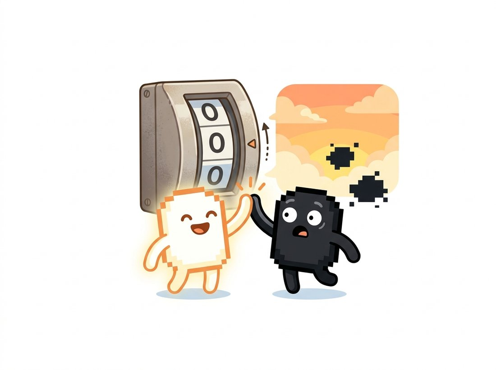

"I am 30 percent mountain, 70 percent weather graphics, and 100 percent committed to this relationship."
A Partially Transparent Alpha Channel
Everything in this chapter so far transformed one image; this section combines several, still strictly pixel by pixel, and that one extension unlocks change detection, crossfades, watermarking, and the alpha-compositing algebra behind every screen you own. The mathematics is elementary (add, subtract, weighted average), so the section's real lessons are the traps and the algebra: uint8 arithmetic that silently wraps around, and the Porter-Duff "over" operator that turned layering images into a closed, composable system.
Subtract last night's empty parking lot from this morning's and the cars light up instantly; this is the entire idea behind security motion detection, and it is two images, one minus sign, per pixel. Through Section 2.1 to Section 2.4 every operation touched a single image; now we let images combine. Given two aligned frames $f_1$ and $f_2$, we compute $f_1 + f_2$, $f_1 - f_2$, or $\alpha f_1 + (1-\alpha) f_2$ at every pixel, and that one step buys change detection, crossfades, watermarking, and compositing. The operations stay within the point-operation family (each output pixel depends only on the input pixels at the same location), but the inputs now come from multiple images, which is where the first trap lies waiting.
1. The Arithmetic Trap: uint8 Overflow Basic
As established in Chapter 0, images arrive as uint8 arrays, and uint8 arithmetic in NumPy is modular: it wraps around at 256 rather than stopping at 255. Adding two bright pixels yields a dark one; subtracting a larger value from a smaller one yields a bright one. OpenCV's arithmetic functions instead saturate, clamping results into $[0, 255]$. The two-line demonstration below is worth running once in your life, because the bug it represents is endemic. The illustration below shows the trap in action: two bright pixels add up and the counter rolls past its maximum back to black.

# The uint8 arithmetic trap: NumPy's +/- wrap around at 256 (modular),
# while OpenCV's cv2.add / cv2.subtract saturate into [0, 255]. Same
# inputs, opposite answers; cv2.absdiff sidesteps the sign issue.
import numpy as np
import cv2
a = np.array([[200]], dtype=np.uint8)
b = np.array([[100]], dtype=np.uint8)
print(a + b) # [[44]] NumPy wraps: (200 + 100) % 256 = 44
print(cv2.add(a, b)) # [[255]] OpenCV saturates: min(300, 255)
print(b - a) # [[156]] NumPy wraps: (100 - 200) % 256
print(cv2.subtract(b, a)) # [[0]] OpenCV saturates: max(-100, 0)
print(cv2.absdiff(a, b)) # [[100]] |200 - 100|, always safecv2.add clamps to 255 and cv2.subtract floors at 0. For differences, cv2.absdiff sidesteps the sign problem entirely, returning a clean 100.
The symptoms of wraparound in real pipelines are unforgettable: brightened skies turn black in blotches, difference images light up like neon. The one-line rule to carry: never let uint8 do its own math. Either use the saturating cv2.add, cv2.subtract, cv2.absdiff, and cv2.addWeighted for uint8 work, or widen the type first (astype(np.float32) or np.int16), compute, then clip and convert back, exactly the float-clip-convert discipline from Section 2.1.
Saturating arithmetic is not merely "the safe option"; it models physical reality. Light adds: doubling exposure cannot make a sensor read negative, and a sensor well that is full stays full. Modular arithmetic models nothing visual at all; it is a hardware accident of binary counters. When you choose a dtype and an arithmetic mode, you are choosing the physics of your pixel algebra, which is why serious compositing pipelines work in float and clamp exactly once, at the end.
2. Blending: The Weighted Average Basic
The most useful two-image operation is the convex combination
$$g = \alpha f_1 + (1 - \alpha) f_2, \qquad \alpha \in [0, 1]$$
which crossfades between the images: $\alpha = 1$ shows pure $f_1$, $\alpha = 0$ pure $f_2$, and anything between is a dissolve. One call does it with saturation handled:
# Convex-combination blending with cv2.addWeighted (saturation handled):
# sweeping alpha from 1 to 0 dissolves one image into another, and the
# same call with a lopsided weight stamps a translucent watermark.
import cv2
import numpy as np
day = cv2.imread("street_day.jpg")
night = cv2.imread("street_night.jpg") # same size and dtype
# A 60-frame crossfade from day to night:
frames = []
for i in range(60):
alpha = 1.0 - i / 59.0 # 1.0 -> 0.0
mix = cv2.addWeighted(day, alpha, night, 1.0 - alpha, 0.0)
frames.append(mix)
# Watermarking is the same operation with a high alpha:
logo_bg = cv2.addWeighted(day, 0.92, np.full_like(day, 255), 0.08, 0.0)cv2.addWeighted: the per-frame convex combination (alpha sweeping 1.0 to 0.0) produces a 60-frame dissolve, and the same call with a lopsided 0.92/0.08 weight implements translucent watermarking. The final 0.0 argument is a scalar bias added after the weighted sum.Blending has a second life far from video editing: averaging $N$ aligned noisy frames divides the noise standard deviation by $\sqrt{N}$, the cheapest denoiser ever invented and a staple of astrophotography and microscopy (a theme developed properly in Chapter 7).
Why a square root rather than a plain $N$? The true scene is identical in every frame, so averaging leaves it untouched, while the noise is random and independent from frame to frame, so it adds in variance rather than in amplitude. Averaging $N$ samples of variance $\sigma^2$ yields a result of variance $\sigma^2 / N$, and taking the square root to get back to a standard deviation gives the $\sqrt{N}$ law. This is the same variance-adds, not-standard-deviations bookkeeping that drove the between-class variance decomposition in Section 2.4. Watch how fast that buys clean pixels: averaging just 4 frames halves the noise, and 16 frames quarters it, which is why an astrophotographer stacks a hundred exposures of the same galaxy and pulls a clean image out of what looked like pure grain in any single shot.
The same blending formula has a third life in deep learning. The mixup augmentation blends pairs of training images (and their labels) with a random $\alpha$, exactly this section's convex combination deployed as a regularizer, which we will meet among the training recipes of Chapter 21.
3. Difference Images: Seeing Change Intermediate
Subtracting two aligned images of the same scene isolates what changed between them. With a clean reference frame (an empty corridor, a bare conveyor belt), cv2.absdiff against the live frame highlights everything new, and a threshold from Section 2.4 turns the difference into a binary change mask. This three-line pattern is the ancestral form of motion detection and still runs in countless deployed systems:
# Frame differencing, the ancestral motion detector: absolute difference
# against a reference frame, a binary threshold on the change magnitude,
# and a changed-area fraction that triggers only on meaningful motion.
import cv2
background = cv2.imread("empty_corridor.png", cv2.IMREAD_GRAYSCALE)
frame = cv2.imread("corridor_now.png", cv2.IMREAD_GRAYSCALE)
diff = cv2.absdiff(frame, background) # |frame - background|
_, motion_mask = cv2.threshold(diff, 25, 255, cv2.THRESH_BINARY)
changed_fraction = motion_mask.mean() / 255.0
if changed_fraction > 0.02: # >2% of pixels changed
print(f"motion: {changed_fraction:.1%} of frame") # e.g. motion: 7.3%cv2.absdiff against a reference frame, a binary threshold on the change magnitude, and a changed_fraction trigger. The threshold of 25 absorbs sensor noise; the 2 percent area rule absorbs flicker and compression artifacts.
The static-reference assumption is, predictably, the weak point: lighting drifts, trees sway, and the "empty" scene never stays empty. Production systems therefore maintain a running statistical model of the background per pixel (OpenCV ships cv2.createBackgroundSubtractorMOG2, a per-pixel Gaussian mixture), and the full story of motion, including optical flow that estimates where each pixel went rather than just whether it changed, belongs to Chapter 15.
4. Alpha Compositing: The Over Operator Advanced
Blending with one global $\alpha$ dissolves whole images into each other. Compositing generalizes $\alpha$ into a per-pixel coverage map: a fourth channel, the alpha channel, where 1 means fully opaque, 0 fully transparent, and fractions mean partial coverage (the soft edge of hair, the translucency of glass, the antialiased boundary of a rendered logo). Porter and Duff's 1984 paper defined an algebra of twelve ways to combine two such images; the one that conquered the world is over. Placing foreground $F$ (color $C_f$, alpha $\alpha_f$) over background $B$ (color $C_b$, alpha $\alpha_b$):
$$\alpha_o = \alpha_f + \alpha_b (1 - \alpha_f), \qquad C_o = \frac{\alpha_f C_f + \alpha_b C_b (1 - \alpha_f)}{\alpha_o}$$
The structure is exactly what physical intuition demands: the foreground contributes in proportion to its coverage $\alpha_f$, and the background shows through only the remaining $(1 - \alpha_f)$. With an opaque background ($\alpha_b = 1$), the color formula collapses to the familiar $C_o = \alpha_f C_f + (1 - \alpha_f) C_b$. To make that concrete, place a half-covered white edge pixel ($C_f = 255$, $\alpha_f = 0.5$) over a black background ($C_b = 0$): the result is $0.5 \cdot 255 + 0.5 \cdot 0 = 128$, a mid-gray, which is exactly the soft antialiased boundary you see when a white shape meets a dark backdrop. Figure 2.5.1 traces the operator's data flow.
The implementation below covers the overwhelmingly common case of an opaque background, where the division by $\alpha_o$ disappears. Watch the imread flag: OpenCV's default loader silently drops the alpha channel that the whole computation depends on.
# Porter-Duff 'over' for the common opaque-background case: blend a BGRA
# foreground onto a BGR background by its per-pixel alpha. Note the
# IMREAD_UNCHANGED flag: the default loader drops the alpha this needs.
import numpy as np
import cv2
def composite_over(fg_bgra, bg_bgr):
"""Porter-Duff 'over' for a BGRA foreground on an opaque BGR background."""
fg = fg_bgra[..., :3].astype(np.float32)
alpha = (fg_bgra[..., 3:4].astype(np.float32)) / 255.0 # (H, W, 1)
bg = bg_bgr.astype(np.float32)
out = alpha * fg + (1.0 - alpha) * bg # broadcast over channels
return np.clip(out, 0, 255).astype(np.uint8)
overlay = cv2.imread("score_banner.png", cv2.IMREAD_UNCHANGED) # keeps alpha!
frame = cv2.imread("match_frame.jpg")
print(overlay.shape) # (H, W, 4): the 4th channel is alpha
shown = composite_over(overlay, frame)composite_over function: a from-scratch over composite for an opaque background, with float arithmetic, the per-pixel alpha broadcast across the color channels, and one clip at the end. Note cv2.IMREAD_UNCHANGED: the default imread flag silently discards the alpha channel that this entire computation depends on.For general foreground-over-background work, including a semi-transparent background, Pillow implements the full Porter-Duff formula in one line:
from PIL import Image
out = Image.alpha_composite(bg_rgba, fg_rgba) # both in RGBA modeThat one call replaces roughly ten lines of careful float math (the general case must also compute the output alpha and divide by it, with a guard against $\alpha_o = 0$). Internally Pillow handles the un-premultiplied algebra, integer rounding, and full-transparency edge cases that hand-rolled versions reliably get wrong on their first deployment.
The alpha channel was conceived by Alvy Ray Smith and Ed Catmull in the late 1970s, and the compositing algebra was formalized at Lucasfilm's graphics group by Thomas Porter and Tom Duff in 1984, where the immediate use case was layering rendered spaceships over live-action plates without re-rendering everything per frame. The group later spun out as Pixar. Every PNG with transparency you have ever shipped carries a little movie-studio DNA.
5. Masks and Bitwise Operations Intermediate
When transparency is all-or-nothing, the binary masks produced by the thresholding of Section 2.4 take the place of a fractional alpha channel, and compositing reduces to bitwise logic: AND to keep pixels where the mask is set, AND with the inverted mask to punch a hole, OR to merge the pieces. OpenCV's bitwise_* family accepts an 8-bit mask argument that gates the operation per pixel, giving the classic hard-edged logo overlay:
# Hard-mask compositing when transparency is all-or-nothing: Otsu builds
# the logo's binary mask, two bitwise_and operations carve the frame hole
# and extract the logo pixels, and a saturating add welds them together.
import cv2
frame = cv2.imread("match_frame.jpg")
logo = cv2.imread("club_logo.png") # opaque BGR logo on white
# Build a binary mask of the logo's own pixels (Otsu, inverted: logo is dark)
logo_gray = cv2.cvtColor(logo, cv2.COLOR_BGR2GRAY)
_, mask = cv2.threshold(logo_gray, 0, 255,
cv2.THRESH_BINARY_INV + cv2.THRESH_OTSU)
mask_inv = cv2.bitwise_not(mask)
roi = frame[20:20 + logo.shape[0], 20:20 + logo.shape[1]]
hole = cv2.bitwise_and(roi, roi, mask=mask_inv) # background minus logo area
inked = cv2.bitwise_and(logo, logo, mask=mask) # logo pixels only
frame[20:20 + logo.shape[0], 20:20 + logo.shape[1]] = cv2.add(hole, inked)mask, cv2.bitwise_and with mask_inv empties the logo-shaped region of the frame, another AND extracts the logo's pixels, and cv2.add welds the two together. This idiom predates the alpha channel and still runs in embedded systems with no float unit.
This bitwise idiom is the workhorse of region-of-interest processing throughout the rest of the book: masks select which pixels an operation may touch, whether that operation is a histogram (the mask argument of cv2.calcHist in Section 2.2), a color correction, or a generative edit. The masks themselves will get vastly smarter, produced by morphology in Chapter 6 and by segmentation networks later, but the compositing algebra they plug into is the one on this page. Two previews of where this leads: blending with a soft mask across a seam is done far better at multiple scales with the pyramids of Chapter 4, and the modern generative version of "put this object into that photo" appears in Chapter 35.
Every tool in this chapter now sits in your hands: tone curves that fix exposure, histograms that diagnose it, equalization and CLAHE that boost local contrast, Otsu and adaptive thresholds that turn pixels into decisions, and the compositing algebra above that recombines them. The Hands-On Lab at the end of this section asks you to wire all five into one program, an automatic document cleanup tool that decides what each scan needs and proves the decision with a side-by-side panel.
Who: A graphics engineer at a regional sports broadcaster, building a live score-bug renderer for lower-league football streams.
Situation: The score bug (a semi-transparent panel with club crests and the clock) was composited onto each 1080p frame in Python before encoding. The first implementation added the panel with plain NumPy uint8 arithmetic.
Problem: On bright pitches the panel region flickered with dark garbage pixels. The uint8 sums were wrapping past 255 wherever sunlit grass met the panel's light pixels: the exact overflow trap from this section, shipping live to a few thousand viewers.
Decision: The engineer rewrote the composite as a proper premultiplied-alpha over in float32. Premultiplied alpha stores each color already multiplied by its own coverage $\alpha_f C_f$, rather than the straight (un-premultiplied) $C_f$ used in the formulas above, which removes one multiply from the inner loop and avoids fringing on soft edges. The engineer built the panel's alpha once per design change, and (after profiling the float conversion at 1080p60) cached the panel as premultiplied float so the per-frame cost was one multiply-add per pixel.
Result: The flicker vanished, per-frame compositing time dropped below 2 milliseconds, and the renderer survived three seasons unchanged.
Lesson: Compositing bugs are arithmetic bugs in disguise. Decide the dtype and the alpha convention (straight versus premultiplied) once, document them, and convert at the boundaries only.
Classical compositing pastes pixels; the open research problem is making the paste physically plausible: matching illumination, casting shadows, adding reflections. ObjectStitch (CVPR 2023) reframed object compositing as conditional diffusion generation, and IMPRINT (CVPR 2024) improved identity preservation so the inserted object stays recognizably itself while adapting pose and lighting. ObjectDrop (2024) trained on counterfactual photo pairs (a scene photographed with and without an object) to learn the object's effects on the scene, shadows and reflections included, and Magic Insert (2024) extended drag-and-drop insertion across style domains. All of them still respect this section's contract (a foreground, a background, a region to fill), but replace the over operator's weighted average with a generative model conditioned on both layers, the subject of Chapter 35.
Using the over formulas, compute the composite color and alpha when a 50 percent opaque red layer ($C_f = (255, 0, 0)$, $\alpha_f = 0.5$) is placed over a 50 percent opaque blue layer ($C_b = (0, 0, 255)$, $\alpha_b = 0.5$). Then compute blue over red and compare. Is over commutative? Is it associative? Explain in one paragraph why one of these properties matters far more than the other for a layered renderer.
Extend this section's bitwise logo overlay to use a feathered alpha instead of a hard mask: blur the Otsu mask with cv2.GaussianBlur (kernel size 15), normalize it to $[0, 1]$, and composite with the from-scratch composite_over routine. Produce a side-by-side of the hard-mask and soft-mask results at 4x zoom on the logo boundary and describe the difference. Then animate the overlay fading in over 30 frames by scaling the alpha map.
Capture or synthesize 32 noisy versions of the same image (add Gaussian noise, $\sigma = 20$, to a clean photo). Average the first $N$ frames for $N \in \{1, 2, 4, 8, 16, 32\}$ in float32, and for each average compute the PSNR against the clean image using the metric from Chapter 1. Plot PSNR against $N$ on a log axis, verify the $\sqrt{N}$ noise reduction (about 3 dB per doubling), and explain where the curve would stop improving for real handheld photos rather than perfectly aligned synthetic frames.
Hands-On Lab: An Automatic Document Cleanup Studio
Objective
Build a single command-line program, clean_scan.py, that takes a poorly lit phone photo of a printed page or receipt and returns a clean, readable black-on-white version, choosing its own enhancement settings from the image's histogram rather than from hand-tuned constants. The program ends by saving one annotated comparison panel that shows the original, the enhanced grayscale, and the final binarized page side by side. This is the chapter's whole arc (measure, prescribe, decide, combine) turned into one tool you could hand to a non-programmer.
What You'll Practice
- Reading exposure problems from histogram statistics, mean, percentiles, and entropy, from Section 2.2.
- Composing a brightness, contrast, and gamma correction into one lookup table and applying it with
cv2.LUT, from Section 2.1. - Boosting local contrast with CLAHE via
cv2.createCLAHE, from Section 2.3. - Choosing between global Otsu and
cv2.adaptiveThresholdbased on whether the page is evenly lit, from Section 2.4. - Assembling the three stages into one labeled output image with the per-pixel arithmetic of this section.
Setup
You need opencv-python and numpy only; both were installed in Chapter 0. Verify with pip install opencv-python numpy. For input, take three phone photos: one well lit page, one underexposed page, and one page shot under a strong side light so one corner is much darker than the other. No page handy? Synthesize a test image by drawing black text on a white canvas and multiplying by a smooth brightness gradient. Save your inputs next to the script.
Steps
Step 1: Load the scan and measure its histogram
Read the image, convert to grayscale, and compute the statistics that will drive every later decision. You are turning the page into numbers before touching a single pixel value, exactly the measure-first discipline of Section 2.2.
import sys, cv2, numpy as np
def load_gray(path):
bgr = cv2.imread(path, cv2.IMREAD_COLOR)
if bgr is None:
sys.exit(f"could not read {path}")
return bgr, cv2.cvtColor(bgr, cv2.COLOR_BGR2GRAY)
def stats(gray):
hist = cv2.calcHist([gray], [0], None, [256], [0, 256]).ravel()
p = hist / hist.sum() # normalized histogram (a distribution)
cdf = np.cumsum(p)
# TODO: return a dict with keys "mean", "p05", "p95", "entropy".
# Hint: mean is float(gray.mean()); p05/p95 are the intensities where cdf
# first crosses 0.05 and 0.95 (use np.searchsorted); entropy is
# -sum(p * log2(p)) over the nonzero bins.
Hint
For the percentiles, int(np.searchsorted(cdf, 0.05)) and int(np.searchsorted(cdf, 0.95)) give the 5th and 95th percentile intensities. For entropy, mask out empty bins first: nz = p[p > 0]; entropy = float(-(nz * np.log2(nz)).sum()). Low entropy and a narrow p95 - p05 spread both signal a flat, low-contrast scan.
Step 2: Prescribe a tone curve from the statistics
Use the measured mean and percentile spread to build one 256-entry lookup table that brightens dark scans and stretches flat ones. The table is computed once and applied to every pixel in a single pass, the lookup-table idea from Section 2.1.
def build_tone_lut(s):
x = np.arange(256, dtype=np.float32)
# Percentile stretch: map [p05, p95] to roughly [10, 245].
lo, hi = s["p05"], max(s["p95"], s["p05"] + 1)
stretched = (x - lo) * (235.0 / (hi - lo)) + 10.0
# TODO: pick a gamma from the mean. If the scan is dark (mean < 110),
# use gamma < 1 to lift shadows; otherwise use gamma = 1.0.
# Hint: normalize stretched to [0,1], raise to (1/gamma), scale back to [0,255].
gamma = 1.0 # replace this line using s["mean"]
norm = np.clip(stretched, 0, 255) / 255.0
out = np.power(norm, 1.0 / gamma) * 255.0
return np.clip(out, 0, 255).astype(np.uint8)
Hint
A simple, defensible rule: gamma = 0.6 if s["mean"] < 110 else 1.0. Gamma below 1 raises midtones, the shadow-lifting behavior shown in Section 2.1. Apply the finished table with toned = cv2.LUT(gray, build_tone_lut(s)): one pass, no Python loop over pixels.
Step 3: Boost local contrast with CLAHE
A global tone curve cannot rescue a page whose top is bright and bottom is dim. CLAHE equalizes contrast tile by tile with a clip limit that prevents noise blow-up, the workhorse of Section 2.3.
def local_contrast(toned):
# TODO: construct a CLAHE operator with clipLimit=2.5 and tileGridSize=(8, 8),
# then return its .apply() result on the toned grayscale image.
pass
Hint
clahe = cv2.createCLAHE(clipLimit=2.5, tileGridSize=(8, 8)); return clahe.apply(toned). Build the operator once if you process many pages. Larger tiles act more globally; a smaller clip limit is gentler on noise.
Step 4: Decide the binarization method from the lighting
Now turn intensities into a yes-or-no ink decision. An evenly lit page binarizes well with one global Otsu threshold; an unevenly lit page needs a per-region adaptive threshold. Let the histogram pick, the decide step of Section 2.4.
def binarize(enhanced, s):
even_light = (s["p95"] - s["p05"]) > 60 # wide spread suggests usable global contrast
if even_light:
_, binary = cv2.threshold(enhanced, 0, 255,
cv2.THRESH_BINARY + cv2.THRESH_OTSU)
method = "otsu"
else:
# TODO: use cv2.adaptiveThreshold (Gaussian, blockSize=41, C=10)
# to produce a binary image; set method = "adaptive".
binary, method = None, "adaptive"
return binary, method
Hint
binary = cv2.adaptiveThreshold(enhanced, 255, cv2.ADAPTIVE_THRESH_GAUSSIAN_C, cv2.THRESH_BINARY, 41, 10). The blockSize must be odd and comfortably larger than the text stroke width; C is subtracted from each local mean to bias toward white paper.
Step 5: Combine the stages into one labeled comparison panel
Stack the original grayscale, the enhanced grayscale, and the binarized page side by side, then paste a caption strip on each using the per-pixel arithmetic and region writes of this section. This panel is the artifact you keep.
def panel(gray, enhanced, binary, method):
tiles = [gray, enhanced, binary]
labels = ["original", "enhanced", f"binary ({method})"]
h = min(t.shape[0] for t in tiles)
tiles = [cv2.resize(t, (int(t.shape[1] * h / t.shape[0]), h)) for t in tiles]
# TODO: write each label onto its tile with cv2.putText, then
# horizontally concatenate the three tiles with np.hstack
# and return the result.
pass
Hint
Loop with for tile, text in zip(tiles, labels): cv2.putText(tile, text, (10, 30), cv2.FONT_HERSHEY_SIMPLEX, 1.0, 0, 2) (black text reads on the white paper), then return np.hstack(tiles). Save with cv2.imwrite("comparison.png", panel(...)).
Step 6: Wire it together as a command-line tool
Assemble the helpers into a main that prints the chosen settings and writes both the clean page and the comparison panel. Printing the decisions makes the tool auditable: you can see why it picked adaptive over Otsu on a given scan.
def main(path):
bgr, gray = load_gray(path)
s = stats(gray)
toned = cv2.LUT(gray, build_tone_lut(s))
enhanced = local_contrast(toned)
binary, method = binarize(enhanced, s)
print(f"mean={s['mean']:.1f} spread={s['p95'] - s['p05']} method={method}")
cv2.imwrite("clean_page.png", binary)
cv2.imwrite("comparison.png", panel(gray, enhanced, binary, method))
if __name__ == "__main__":
main(sys.argv[1] if len(sys.argv) > 1 else "scan.jpg")
Hint
Run it with python clean_scan.py underexposed.jpg. If the binary output is mostly black, your tone curve over-darkened; recheck the gamma rule in Step 2. If text is broken on the side-lit scan, confirm the adaptive branch actually ran by reading the printed method.
Expected Output
Running the tool on your three test images should print a line per image such as mean=78.4 spread=44 method=adaptive for the side-lit page and mean=171.2 spread=128 method=otsu for the well lit one, demonstrating that the program changes its own strategy. The saved comparison.png shows three labeled panels left to right: a murky original, a brighter even-contrast enhanced version, and a crisp black-on-white page where the text is legible even in the corner that started in shadow. The standalone clean_page.png should be a clean binary scan suitable for OCR.
Stretch Goals
- Library shortcut: replace your hand-built Sauvola-style decision with scikit-image's
skimage.filters.threshold_sauvolaand compare its output to your adaptive branch on the hardest scan. State how many lines this removed and what the library handles internally (per-pixel mean and standard deviation windows). - Process a whole folder of scans with a glob loop, write each cleaned page to an
output/directory, and append every printed settings line to a CSV log, the start of the histogram telemetry idea from Exercise 2.2.2. - Add a faint colored highlight over the ink pixels in the enhanced panel by compositing a red layer through the binary mask with the
composite_overroutine from this section, so the panel doubles as a detection overlay.
Complete Solution
import sys, cv2, numpy as np
def load_gray(path):
bgr = cv2.imread(path, cv2.IMREAD_COLOR)
if bgr is None:
sys.exit(f"could not read {path}")
return bgr, cv2.cvtColor(bgr, cv2.COLOR_BGR2GRAY)
def stats(gray):
hist = cv2.calcHist([gray], [0], None, [256], [0, 256]).ravel()
p = hist / hist.sum()
cdf = np.cumsum(p)
nz = p[p > 0]
return {
"mean": float(gray.mean()),
"p05": int(np.searchsorted(cdf, 0.05)),
"p95": int(np.searchsorted(cdf, 0.95)),
"entropy": float(-(nz * np.log2(nz)).sum()),
}
def build_tone_lut(s):
x = np.arange(256, dtype=np.float32)
lo, hi = s["p05"], max(s["p95"], s["p05"] + 1)
stretched = (x - lo) * (235.0 / (hi - lo)) + 10.0 # percentile stretch
gamma = 0.6 if s["mean"] < 110 else 1.0 # lift shadows if dark
norm = np.clip(stretched, 0, 255) / 255.0
out = np.power(norm, 1.0 / gamma) * 255.0
return np.clip(out, 0, 255).astype(np.uint8)
def local_contrast(toned):
clahe = cv2.createCLAHE(clipLimit=2.5, tileGridSize=(8, 8))
return clahe.apply(toned)
def binarize(enhanced, s):
even_light = (s["p95"] - s["p05"]) > 60
if even_light:
_, binary = cv2.threshold(enhanced, 0, 255,
cv2.THRESH_BINARY + cv2.THRESH_OTSU)
return binary, "otsu"
binary = cv2.adaptiveThreshold(enhanced, 255,
cv2.ADAPTIVE_THRESH_GAUSSIAN_C,
cv2.THRESH_BINARY, 41, 10)
return binary, "adaptive"
def panel(gray, enhanced, binary, method):
tiles = [gray, enhanced, binary]
labels = ["original", "enhanced", f"binary ({method})"]
h = min(t.shape[0] for t in tiles)
tiles = [cv2.resize(t, (int(t.shape[1] * h / t.shape[0]), h)) for t in tiles]
for tile, text in zip(tiles, labels):
cv2.putText(tile, text, (10, 30),
cv2.FONT_HERSHEY_SIMPLEX, 1.0, 0, 2)
return np.hstack(tiles)
def main(path):
bgr, gray = load_gray(path)
s = stats(gray)
toned = cv2.LUT(gray, build_tone_lut(s))
enhanced = local_contrast(toned)
binary, method = binarize(enhanced, s)
print(f"mean={s['mean']:.1f} spread={s['p95'] - s['p05']} method={method}")
cv2.imwrite("clean_page.png", binary)
cv2.imwrite("comparison.png", panel(gray, enhanced, binary, method))
if __name__ == "__main__":
main(sys.argv[1] if len(sys.argv) > 1 else "scan.jpg")